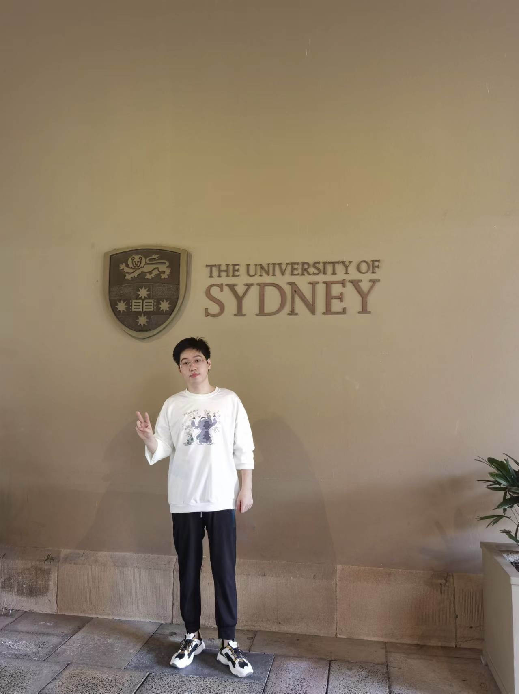

01 / Language
Read what numbers miss.
I build datasets from text and use NLP and large language models to measure sentiment, disclosure, and investor attention.
Wenlan (Tony) Xie · Economics at UChicago
Exploring how language, data, and human decisions shape financial markets.
01 / About
I study the stories hidden in economic data — especially the words that move firms and markets.

The researcher
I am an Economics student at the University of Chicago. My work uses natural language processing and large language models to study information disclosure, corporate decisions, and investor attention.
Previously, I earned a Master of Commerce in Data Analytics from the University of Sydney with Distinction and a Bachelor's degree from the University of Canterbury.
02 / Research
I connect unstructured data with economic theory, combining computational methods and causal inference to study how information shapes behavior.
01 / Language
I build datasets from text and use NLP and large language models to measure sentiment, disclosure, and investor attention.
02 / Method
Econometric identification, panel models, and simulation help separate interesting patterns from credible evidence.
03 / Markets
My current interests span corporate disclosure, financial returns, environmental policy, and the behavior of firms and investors.
03 / Publications
Peer-reviewed articles across financial economics, environmental policy, and text analysis.
Accounting Forum, forthcoming
International Journal of Finance and Economics, 0:1–33
Finance Research Letters, 105669
Finance Research Letters, 63, 105275
Resources Policy, 88, 104493
Economics Letters, 232, 111339
04 / Experience
Research is collaborative work: building data, testing ideas, and sharing findings with a wider community.
Research assistant · UChicago
Replicating empirical tables and figures in Python and R, and using Monte Carlo simulations to study estimator bias and variance.
Research assistant · HKU
Building large-scale disclosure datasets and estimating the effects of environmental regulation on firm behavior.
Referee for Applied Economics, Applied Economics Letters, Review of Quantitative Finance and Accounting, Finance Research Letters, International Review of Economics & Finance, Scientific Reports, Information Processing & Management, Economics of Governance, and Discover Sustainability.
05 / Notes